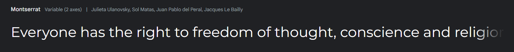
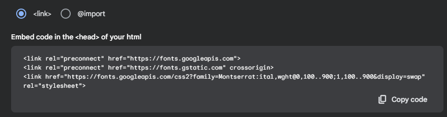
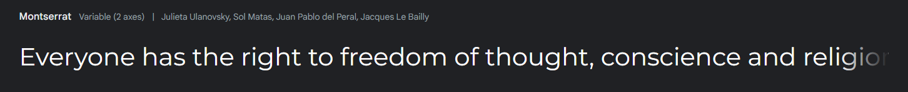
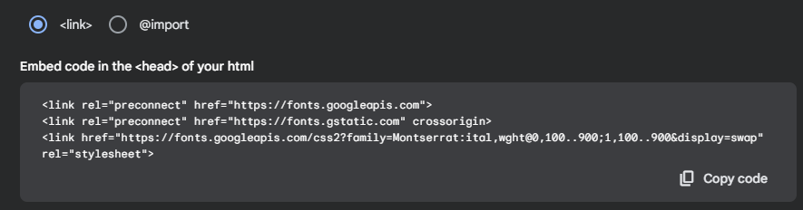
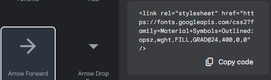
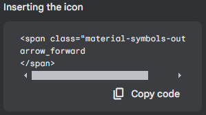

Link a las fuentes de Google
1. Click en la fuente elegida
2. Get font + get embed code
3. Copy code + insertar en el "head"
4. Poner en el css el nombre de la fuente

1. Click en la fuente elegida
2. Get font + get embed code
3. Copy code + insertar en el "head"
4. Poner en el css el nombre de la fuente
1. Seleccionamos el icono + insertar en "head"
2. Insertar en la parte HTML deseada
3. El resultado es el siguiente:
arrow_back home menu refresh check close arrow_forward